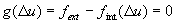
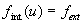
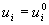
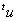
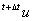
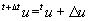
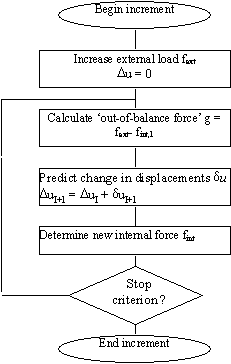
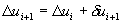
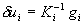

This
is the Help on the analysis procedures with respect to iteration schemes and
convergence criteria.
GEOMEC
calculates the solution of an elasto-plastic problem via striving to an
equilibrium state in which the internal force vector equals the external force
vector, satisfying boundary conditions. For reasons of simplicity, here we focus
on the force equilibrium.
 
The
system described above is already discretized in space. To enable a numerical
solution, a time discretization is performed as well. Here ‘time’ can have a
real physical meaning, or it can be a pseudo-time, only to describe the sequence
of situations. Starting at time t with the approximated solution
 

and with g as the out-of-balance force vector

In
GEOMEC for every load increment in an iterative process the errors that occur
can be reduced successively. The general procedure is the same for all iteration
processes. In all procedures, the total displacement increment
Du
is adapted
iteratively by iterative increments du
until equilibrium is reached, up to a prescribed tolerance.

Indicating
the iteration number with a right subscript, the incremental displacements at
iteration I+1 are calculated from

The
difference between several procedures is the way in which du
is determined. The iterative increments are calculated by use of a ‘stiffness
matrix’ K, that represents some kind of linearized form of the relation
between the force vector and displacement vector. The used stiffness matrix can
change every iteration, the matrix that is used in iteration i is called Ki.
A direct approach is to determine the iterative increments by

where
gI is the out-of-balance force vector at the start of
iteration i. In this case a linear set of equations is solved at every
iteration.
Four different
iterative procedures are presented:
|
Constant
Stiffness iterative method |
|
|
Linear
Stiffness iterative method |
|
|
Regular
Newton-Raphson iterative method |
|
|
Modified
Newton-Raphson iterative method |